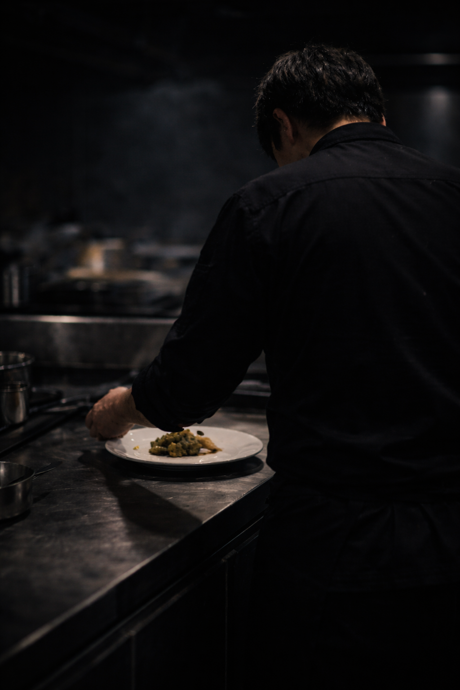

Concept
素材の輪郭が最後まで消えないよう、介入は最小に留める
Philosophy
季節や産地が持つ輪郭を、料理の中で曖昧にしないことを前提としています。
強い演出や説明は、体験の記憶を単純化してしまうため行いません。
そのため本店では、過程よりも、残った感覚そのものが体験として成立する構成を採っています。
Chef

Profile
国内外の名門レストランで修行後に独立。
食材の扱いと記憶の残り方に関心を深める。
音楽や造形表現にも長く関わり、余白や残響をテーマに多くの作品を制作。
Notes
理解されることを目的としていません。
説明や意味づけは、体験そのものを置き換えてしまうからです。
残った感覚だけが結果として扱われます。。
そのためにも食材の仕込みが特に大事です。
Signature
『Terrine de Silence』 余韻を残し、痕跡は残さない。
Reservation
ご予約は原則として紹介制です。
Notes
・一斉開始（遅刻時は一部構成が変わる場合があります）
・アレルギーは事前申告をお願いします
・当日キャンセルはコース料金を申し受けます
Access
都内某所（詳細はご予約確定後にご案内します）
Information
CLOSE
Notice
※ 一部の記録（過去の体験）は現在公開しておりません。